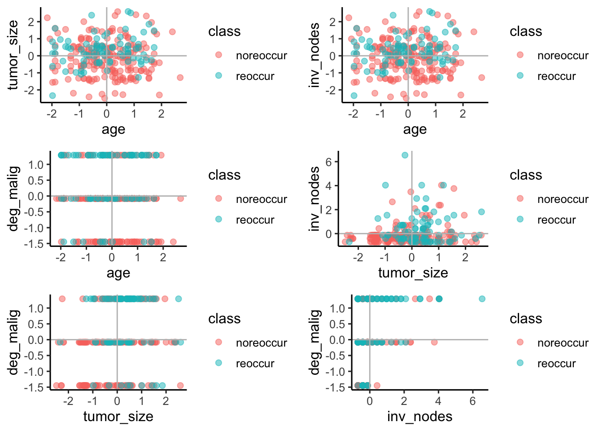
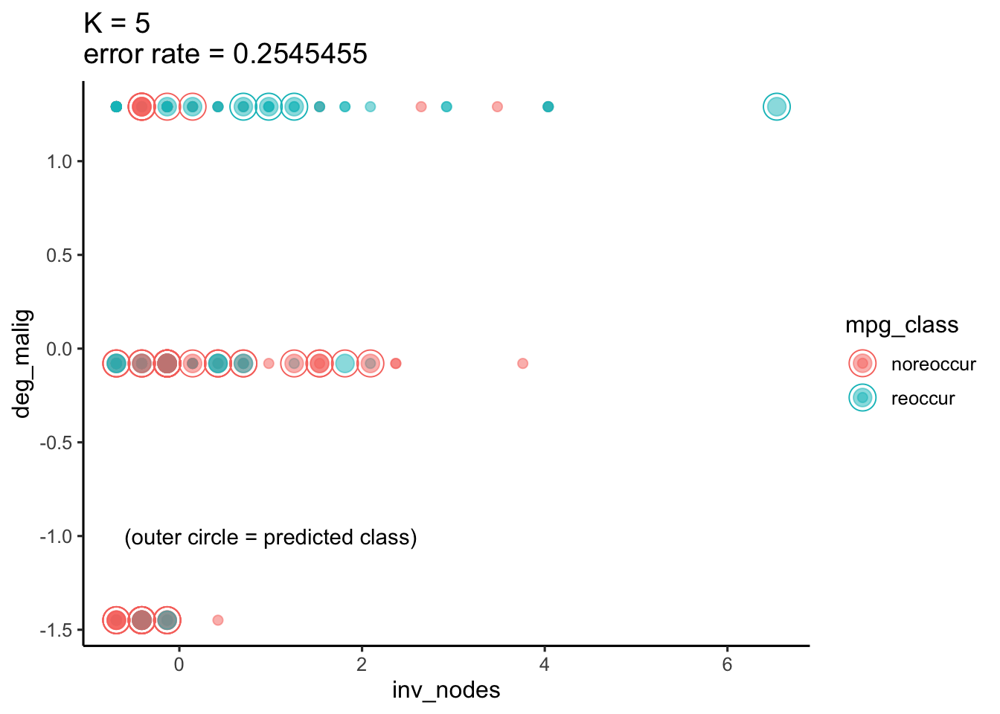

Chapter 2 K Nearest Neighbors
The first model we are going to use is the K Nearest Neighbors.
2.1 General KNN Model
We first build KNN model based on all the sleceted variables: tumor_zise, age, inv_nodes, deg_malig.
## The prediction error rate is: 0.3454545We obtain the prediction error rate is 0.34, which is not that good.
2.2 2 Factor KNN Model
2.2.1 2 Factor Sample Distribution
We then focus on the KNN model with 2 factors for a simplicity in model, we visualize the distribution of samples among 2 factors:
 From the sample distribution, we can see the points in four plots are all interleaved with each other, and it’s hard for us to figure out a line to divide the points into 2 classes.
For continuous feature age and tumor_size, we see that the sample distribution has no difference in different classes, both class noreoccur and class reoccur has similar distribution among age and tumor_size. So we can say that if we only look at the one factor to analyze the breast cancer recurrence, then no matter people at any age and have any size of tumor, they all have possibility to have the cancer again.
For feature deg_malig, from the plots related to it, we can conclude that deg_malig seems to have unbalanced value distribution, where value=1 (after normalization) has a largest proportion. Also, consider the class distribution in feature deg_malig, when value=1, the samples seem to have more class reoccur than class noreoccur, and when value=-1.5, the samples seem to have more class noreoccur than class reoccur. Where can be concluded that feature deg_malig may be influential to classfication.
For feature inv_nodes, from the plots related to it, we can conclude that inv_nodes also seems to be influential for classification, we can see although for noreoccur samples, they seems to distributed balanced among inv_nodes, while for reoccur samples, when the inv_nodes value>0 (after normalization), there are more reoccur samples distributed in the range inv_nodes value<0.
2.2.2 2 Factor Model Prediction
Then we focus on one specific modeling situation, we select feature inv_nodes and deg_malig as the model factor and then find the best k value for the knn model,
## [1] 0.2909091 0.2727273 0.2545455 0.2727273 0.2545455 0.2727273 0.2545455
## [8] 0.2545455 0.2545455 0.2727273From the table above, we consider the situation where k = 5, and visualize the prediction plot,

Still, we can see the points are interleaved with each other, and due to the plot of alpha = 0.5, we can see the specific interleaved situation. Obviously, when the points are interleaved with the same class, the predictions are correct, while when the points are interleaved with the different classes, we can see the model would predict the sample as class noreoccur most of the time. In the following models, we would discuss this model preference with a deeper perspective.